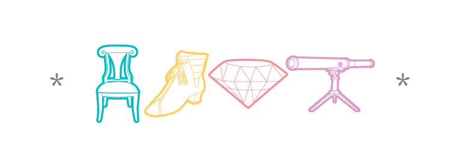
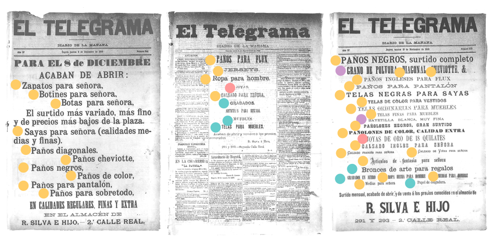

Estas visualizaciones representan los objetos en un ejercicio de lectura distante (F. Moretti), en el que estos se analizan como dato utilizando la metodología de tareas y descubrimientos de T. Munzner; se obtienen algunos hallazgos sobre los objetos en la novela y se plantea una nueva hipótesis sobre la importación de muebles y bienes de lujo a Bogotá en el siglo XIX.
Categorías
Para definir las categorías de objetos presentes en la novela, se decidió indagar archivos de prensa que evidencian anuncios publicitarios del almacén R. Silva e Hijo; este almacén pertenecía a la familia del autor. De este proceso resultaron las categorías: muebles y decoración, vestuario, joyería, instrumentos.


¿Cuáles son los objetos?
La primera tarea del proyecto de visualización consiste en presentar el inventario total de objetos, organizado por categorías, según cada uno de los días del diario de Fernandez. Se propone una visualización de árbol colapsible en D3, que permite al usuario interactuar con los contenidos en una estructura jerárquica con los siguientes niveles: diario - día - categoría de objeto - descripción del objeto. Adicionalmente se propone la implementación de un buscador que permite hacer la busqueda de manera inversa, partiendo del objeto (en orden alfabético) al diario.
A primera vista se evidencian los días que tienen objetos que se enmarcan en las categorías propuestas. En contraste se evidecian también los días que no incluyen este tipo de objetos. Se puede indagar en cada día y en cada objeto de manera manual e intuitiva.
Distribución de objetos en los 36 días del diario
La seguda tarea del proyecto es buscar patrones existentes en la presencia de objetos a lo largo de la narración. Para esto se propone una visualización de árbol radial que permite presentar la distribución total de objetos y sus categorías, de manera secuencial.
Esta gráfica evidencia la presencia constante y mayoritaria de objetos pertenecientes a la categoría muebles y decoración, seguida por los pertenecientes a la categoría vestuario. La distribución total es de carácter homogéneo y presenta algunas simetrías.ZOOM+
Muebles y objetos decorativos, por ciudad
Una tercera visualización busca evidenciar la presencia de objetos de la categoría con mayor presencia de elementos: "muebles - decoración", según la ciudad desde donde se escribe la entrada del diario.
Sí bien Fernandez recorre en su mayoría ciudades Suizas, son París y Londres las ciudades con más objetos de esta categoría. A partir de esta evidencia se plantea una nueva hipótesis en la que se pregunta si el origen de los muebles importados a Bogotá en el siglo XIX eran en su mayoría ingleses y franceses.